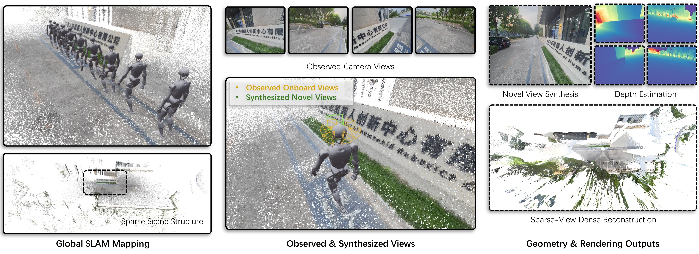
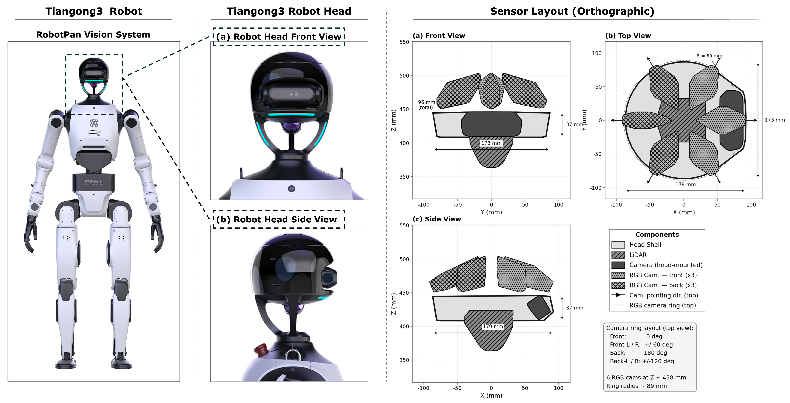

RobotPan: A 360° Surround-View Robotic Vision System for Embodied Perception
RobotPan. A 360° surround-view robotic vision system for real-time rendering, reconstruction, and streaming.
RobotPan. A 360° surround-view robotic vision system for real-time rendering, reconstruction, and streaming.

RobotPan is a surround-view robotic vision system engineered for real-time embodied perception. Integrating six RGB cameras and a central LiDAR, the system achieves full 360° visual coverage during complex robot operations. From calibrated sparse multi-view observations, RobotPan predicts metric-scaled and compact 3D Gaussians. This advanced representation directly enables real-time surround-view rendering, novel view synthesis, metric depth estimation, and sparse-view dense reconstruction. By jointly ensuring strict geometric consistency and real-time rendering performance, the system serves as a highly practical visual interface for humanoid robots across teleoperation, navigation, and loco-manipulation tasks.
Tiangong 3.0 demonstrates advanced whole-body motion control, showcasing agile locomotion, dynamic balance, and coordinated limb movements across diverse terrains and tasks.

Tiangong 3.0 Robot and its RobotPan Vision System sensor layout. Left: Full-body view of the robot highlighting the head region. Middle: Close-up front and side views of the robot head. Right: Orthographic projections of the head-mounted sensing system. The diagrams illustrate a compact sensor arrangement featuring a central LiDAR and a ring of six RGB cameras distributed at 60-degree intervals. This layout is designed to provide comprehensive 360-degree panoramic coverage for robot visual perception.
We evaluate RobotPan across diverse real-world scenarios covering navigation, manipulation, and locomotion. From calibrated sparse-view inputs captured by the surround-view system, RobotPan produces compact 3D Gaussians for real-time 360° rendering, novel view synthesis, and metric-scale depth estimation. The following results demonstrate the system's performance in representative scenes.
Official demonstrations of the Tiangong robot platform, showcasing its full-body motion control, dynamic agility, and robust locomotion capabilities. Click any thumbnail to watch the full video on Bilibili.
Thomas flare — full-body dynamic rotation demonstrating extreme balance and coordinated joint control.
"Leap of Faith" — bold high-altitude jump showcasing agile locomotion and robust landing control.
Full capability demo — versatile whole-body control across diverse tasks with dexterous manipulation.
@misc{robotpan2026,
title = {RobotPan: A 360° Surround-View Robotic Vision System for Embodied Perception},
author = {TODO},
year = {2026},
eprint = {TODO},
archivePrefix = {arXiv},
primaryClass = {cs.RO},
url = {TODO}
}